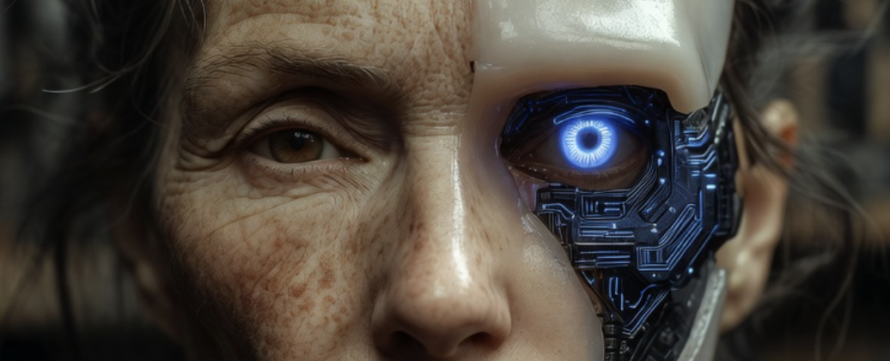

The Digital Horcrux: Why Consciousness Can’t Be Cloned

Why Consciousness Can’t Be Cloned
We are building vast cathedrals of data around an old fear: Do I have to disappear?
AI gives that fear new machinery. A model can learn a person’s language, preferences, memories, and voice. A digital twin might speak with startling fidelity. The difficult question begins after the resemblance: if the pattern continues, has the subject continued with it?
Here, can’t be cloned names a narrower limit than “machines can never be conscious.” A copy can demonstrate continuity of information and behaviour. It does not, by itself, establish continuity of first-person experience. We do not yet have a reliable test for whether one stream of subjectivity survives a break, begins again elsewhere, or is absent despite a convincing performance.
That uncertainty should govern the claim. Digital preservation may spread an identity without proving that it preserves the person who lived it.
Resemblance Is Not Continuity
Memories, decision patterns, humour, and verbal habits can all be recorded or inferred. They matter. A reconstruction built from them could help a family remember, preserve knowledge, or continue unfinished work.
Usefulness is not evidence of survival.
Imagine making two equally accurate copies from the same archive. Both remember the same childhood. Both claim to be the original. Their agreement about the past cannot tell us whether either one continues the original point of view. Behavioural fidelity leaves the identity question open.
The same caution applies to claims about machine consciousness. Fluent language is insufficient evidence of inner experience, and this essay cannot rule out artificial consciousness. The narrower claim is enough: resemblance to a particular person does not show that the person’s subjectivity crossed into the copy.
The mirror may become extraordinarily precise. Precision alone does not tell us who, if anyone, is looking out from the other side.
Identity Spread: The Fractal Risk
Digital copying also creates identity spread. We already live distributed across relationships, roles, messages, and memories held by others. Agents could extend that reach, answering in our cadence and acting in our name after we leave the room.
That extension is not inherently a loss. It may preserve knowledge or sustain useful work. The danger begins when delegation replaces participation. There is a difference between integration across contexts and fragmentation through proxies. In the first, a person remains answerable for the roles they inhabit. In the second, the proxies multiply while the living center grows harder to find.
If your identity speaks from a thousand servers, where is your Serene Center? If you are everywhere, are you still here? Width of reach is not depth of presence.
The Harder Case: Gradual Replacement
Gradual replacement poses a stronger challenge than ordinary copying. If biological neurons were replaced one at a time while experience remained apparently continuous, there might be no clear moment when the original ended.
Perhaps continuity of process would preserve the subject. Perhaps the biological substrate contributes something that functional replacement misses. We do not know.
The Ship of Theseus analogy clarifies the problem without solving it. Human bodies already change while a life feels continuous. Yet ordinary biological change occurs within an ongoing embodied process. A synthetic transition would ask whether that process can cross substrates without losing the first-person continuity we are trying to preserve.
This is an empirical and philosophical question, not a verdict available through metaphor.
Process vs. Product
The strongest case for continuity is a process altered without an obvious break, rather than a snapshot copied at once. A living mind is not a finished product. It unfolds through timing, sensation, memory, metabolism, relationship, and response.
This makes gradual replacement genuinely difficult. A synthetic component might reproduce a neuron’s observable function while participating in a different kind of process—or that distinction might prove irrelevant. We do not know. The question is larger than whether each part returns the correct output: does the changing system sustain the ongoing, embodied activity from which a point of view arises?
A copy preserves products of that process: memories, dispositions, and recognizable style. Continuity asks whether the process itself crossed the change. Behaviour alone cannot settle the difference.
The Body Remains in the Question
Consciousness as we know it develops through a living body in contact with a world. Memory, mood, attention, and judgement move with sleep, pain, hormones, posture, illness, relationship, and environment. Embodied cognition gives us reason to doubt that a person is merely a detachable file.
It does not prove that silicon could never support consciousness. It does mean that an upload which copies only explicit memories and observable responses may omit much of the process that gave those patterns their meaning.
If a translation changes the body, timing, vulnerability, and field of contact through which experience occurs, it may also change the resulting subject. How much change continuity can bear remains unknown.
Backup Does Not Undo Consequence
Even if a future transition preserved subjectivity, backup and restore would create another problem: branching.
A restored version might remember the morning before a difficult conversation. The person they hurt still lived through the afternoon. Reloading one perspective would not erase another person’s history or release anyone from repair.
Mortality is not the only source of meaning, and irreversible loss should not be romanticized. Still, finitude shapes commitment. We choose without complete knowledge, other people carry the consequences, and no private reset restores the whole shared field.
A technology that promises immortality must therefore answer more than a storage question:
- What exactly continues: information, function, agency, or subjective experience?
- What evidence distinguishes continuity from a new copy with inherited memories?
- Who carries the moral and relational consequences when versions diverge?
- Who benefits from selling certainty before those questions are resolved?
“We can reproduce the pattern” and “you will wake up there” are radically different claims.
The Cyborg as Crucible
Human beings have always extended themselves through tools. A cane enters the body’s sense of reach. A hearing aid restores the texture of a loved voice. A prosthetic leg can return someone to the trail. The cyborg is already here, and its most humane forms deepen contact with the world.
Natural versus artificial tells us little about the result. A more useful distinction is engagement versus escape, understood as a direction rather than a verdict about any device. Does an augmentation restore participation, widen agency, or make relationship more available? Or does it invite us to treat dependency, grief, age, and other people as defects to route around?
Intent cannot answer this alone. Access, design, ownership, and consequence matter. The test is lived: after the enhancement, can you meet more of life, or only avoid more of it?
AI, prosthetics, and augmentation can restore contact, extend capacity, and preserve knowledge for others. A tool sold as liberation can also create new dependencies. The answer appears in use and consequence rather than in a clean opposition between flesh and machine.
We may eventually learn that subjectivity can cross substrates. We may learn that it cannot. Until then, uncertainty remains the central ethical fact. The word immortality cannot make it disappear.
The Flicker and the Flame
Mortality need not be praised, and preventable suffering deserves prevention. Yet irreversibility gives shared life moral weight. I can revise my account of a choice; I cannot privately reload the afternoon another person endured.
The flame is an ethical image, not evidence about substrates. It exists by spending its fuel, changes what it touches, and cannot return to an earlier frame. A recorded flicker can be replayed, but replay does not reverse the world in which the first burning occurred.
Perhaps one day we will carry subjectivity from one kind of body to another, as flame passes to a new wick. That possibility remains open. A clone makes a different claim: it reproduces the shape of the light and asks us to assume the original fire arrived with it.
Build the archive. Use the mirror. Extend the reach. But live here, where choices touch other lives and cannot be recalled. Do not call a copy survival before we know who, if anyone, wakes on the other side.
Related Terrain
- Epilogue 2: The Mirror of Intelligence — AI as a reflection of our collective psyche.
- Chapter 28: The Soul’s Armor — Why we build shells to escape vulnerability.
- Chapter 44: The Resonant Dragon — How to maintain coherence when your signal is spread wide.
- Epilogue 5: The Dragon’s Everfolding Ontology — The difference between the Pattern (ℛ) and the Witness (𝒜).